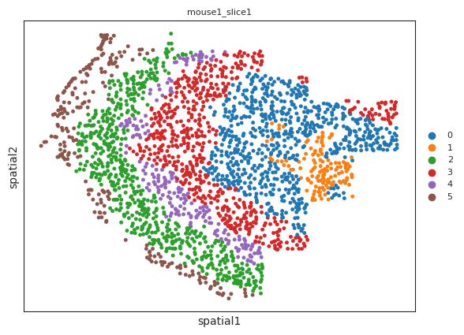
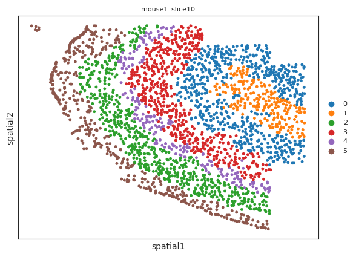
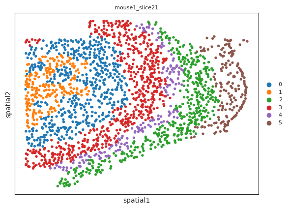
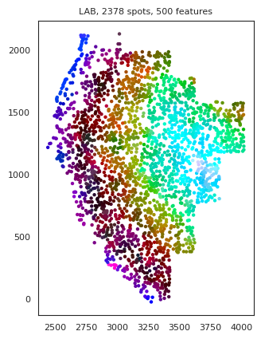
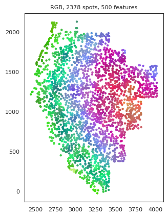
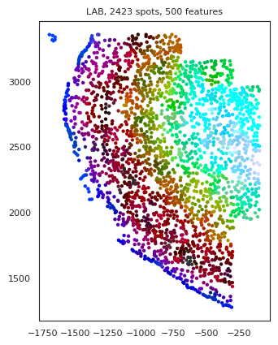
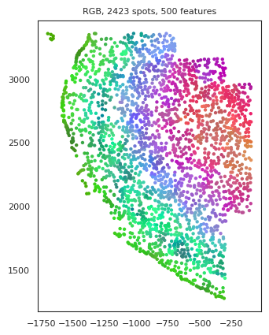
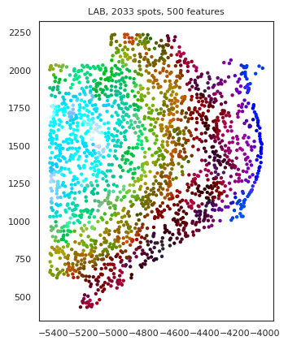
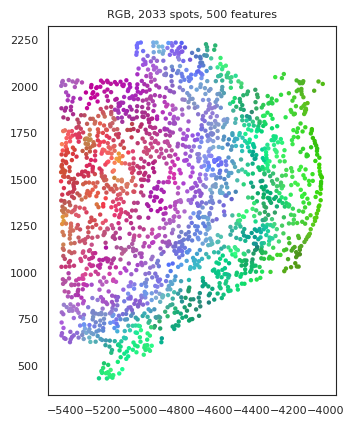

[1]:
import warnings
warnings.filterwarnings("ignore")
import MS
import scanpy as sc
scanpy==1.9.1 anndata==0.8.0 umap==0.5.3 numpy==1.22.4 scipy==1.9.3 pandas==1.5.1 scikit-learn==1.1.2 statsmodels==0.13.2 python-igraph==0.10.2 pynndescent==0.5.7
load the dataset¶
[2]:
import pysodb
sodb = pysodb.SODB()
adata_dict = sodb.load_dataset('Dataset12_MS_raw')
adata = list(adata_dict.values())[0]
download experiment[Dataset12] in dataset[Dataset12_MS_raw]
100%|███████████████████████████████████████████████████████████████████████████████████████████████████████████████████████████████████████| 641M/641M [00:52<00:00, 12.9MB/s]
load experiment[Dataset12] in dataset[Dataset12_MS_raw] from /home/yzy/anaconda3/envs/SODB/lib/python3.9/site-packages/pysodb-1.0.0-py3.9.egg/ysodb/cache/Dataset12_MS_raw/Dataset12.h5ad
[3]:
# this dataset has multiple slices, indicated by the "slice_id" obs
[4]:
print('data size:',adata.shape)
data size: (280327, 254)
MS¶
[15]:
# initialize the MS_multi object
msm = MS.MS_multi(
adata,
batch_obs = 'slice_id'
)
# set the number of scales, default is 15
msm.prepare()
msm.set_MS_para(
n_scales=20
)
# construct the context-aware representation
msm.run_representation_mp(
200
# the number of processings
)
default number of process is 200
total batch: 64, running batch mouse1_slice1
total batch: 64, running batch mouse1_slice10
total batch: 64, running batch mouse1_slice21
total batch: 64, running batch mouse1_slice31
total batch: 64, running batch mouse1_slice40
total batch: 64, running batch mouse1_slice50
total batch: 64, running batch mouse1_slice62
total batch: 64, running batch mouse1_slice71
total batch: 64, running batch mouse1_slice81
total batch: 64, running batch mouse1_slice91
total batch: 64, running batch mouse1_slice102
total batch: 64, running batch mouse1_slice112
total batch: 64, running batch mouse1_slice122
total batch: 64, running batch mouse1_slice131
total batch: 64, running batch mouse1_slice153
total batch: 64, running batch mouse1_slice162
total batch: 64, running batch mouse1_slice170
total batch: 64, running batch mouse1_slice180
total batch: 64, running batch mouse1_slice190
total batch: 64, running batch mouse1_slice200
total batch: 64, running batch mouse1_slice201
total batch: 64, running batch mouse1_slice212
total batch: 64, running batch mouse1_slice221
total batch: 64, running batch mouse1_slice232
total batch: 64, running batch mouse1_slice241
total batch: 64, running batch mouse1_slice251
total batch: 64, running batch mouse1_slice260
total batch: 64, running batch mouse1_slice271total batch: 64, running batch mouse1_slice283
total batch: 64, running batch mouse1_slice291
total batch: 64, running batch mouse1_slice301
total batch: 64, running batch mouse1_slice313
total batch: 64, running batch mouse1_slice326
total batch: 64, running batch mouse2_slice1
total batch: 64, running batch mouse2_slice10
total batch: 64, running batch mouse2_slice20
total batch: 64, running batch mouse2_slice31
total batch: 64, running batch mouse2_slice40
total batch: 64, running batch mouse2_slice50
total batch: 64, running batch mouse2_slice61
total batch: 64, running batch mouse2_slice70
total batch: 64, running batch mouse2_slice79
total batch: 64, running batch mouse2_slice90
total batch: 64, running batch mouse2_slice99
total batch: 64, running batch mouse2_slice109
total batch: 64, running batch mouse2_slice119
total batch: 64, running batch mouse2_slice129
total batch: 64, running batch mouse2_slice139
total batch: 64, running batch mouse2_slice151
total batch: 64, running batch mouse2_slice160
total batch: 64, running batch mouse2_slice169
total batch: 64, running batch mouse2_slice189
total batch: 64, running batch mouse2_slice201
total batch: 64, running batch mouse2_slice209
total batch: 64, running batch mouse2_slice219
total batch: 64, running batch mouse2_slice229
total batch: 64, running batch mouse2_slice249
total batch: 64, running batch mouse2_slice261
total batch: 64, running batch mouse2_slice270
total batch: 64, running batch mouse2_slice280
total batch: 64, running batch mouse2_slice289
total batch: 64, running batch mouse2_slice300
total batch: 64, running batch mouse2_slice309
total batch: 64, running batch mouse2_slice319
[16]:
msm.run_clustering_normal(
-0.3
# the clustering parameter
# positive value for the number of clusters
# negative value for the clustering resolution
)
IOStream.flush timed out
IOStream.flush timed out
output results¶
[17]:
# take the first 3 slice as examples
[19]:
msm.output_cluster_single('MS_cluster_res0.3',idx=0)

[20]:
msm.output_cluster_single('MS_cluster_res0.3',idx=1)

[21]:
msm.output_cluster_single('MS_cluster_res0.3',idx=2)

external application: Tissue Visualization via MS-View¶
[34]:
msm.run_visualization_normal()
IOStream.flush timed out
IOStream.flush timed out
IOStream.flush timed out
[35]:
msm.output_visualization_single(
dot_size=10,
idx=0
# control the size of cell
)
generating color coding...
1.0 0.0

1.0 0.0

[36]:
msm.output_visualization_single(
dot_size=10,
idx=1
# control the size of cell
)
generating color coding...
1.0 0.0

1.0 0.0

[37]:
msm.output_visualization_single(
dot_size=10,
idx=2
# control the size of cell
)
generating color coding...
1.0 0.0

1.0 0.0

save individual slice¶
[38]:
import numpy as np
for si in np.unique(msm.adata_MS.obs['slice_id']):
cur_a = msm.adata_MS[msm.adata_MS.obs['slice_id']==si]
cur_a.write_h5ad(f'process/{data_use}_{si}.h5ad')
save all slice¶
[39]:
# save results
msm.adata_MS.write_h5ad(f'process/{data_use}.h5ad')
[ ]: